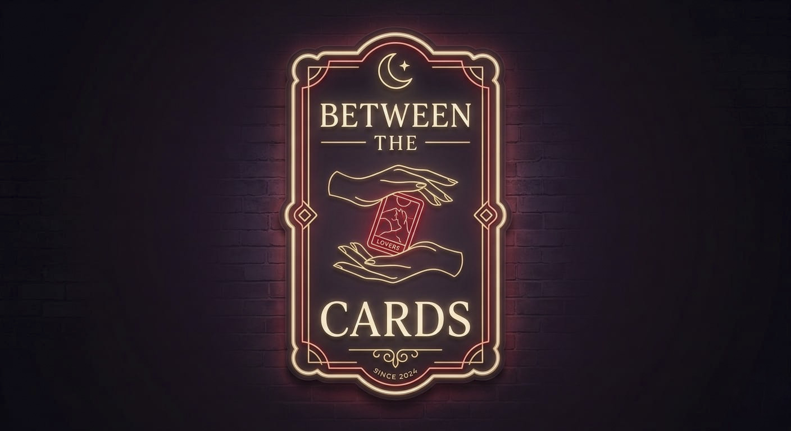
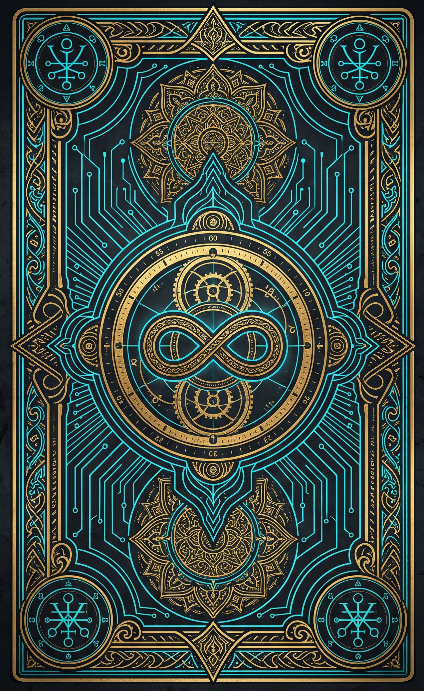

No guilt here. Everyone is safe. Choose how you wish to be held tonight:
How do you approach your own heart? Choose your stance:
The Seeker
Open to Truth
The Protector
Guarding Peace
The Wanderer
Seeking Balance
Sanctuary Guide
• Gentle Healing: Soothes the spirit with tranquil water chimes and comforting insights.
• Raw Longing: Awakens midnight passion with velvety chords and intimate resonance.
• Variant Cards: Adds an occasional inverted perspective (~30% chance) for deeper psychological nuance.
Lay down what you've been carrying in secret:
"Three cards rest before you. Touch each seal to feel completely understood:
1. The Hidden Wound → 2. The Quiet Craving → 3. The Soft Release"
1. The Hidden Wound → 2. The Quiet Craving → 3. The Soft Release"
